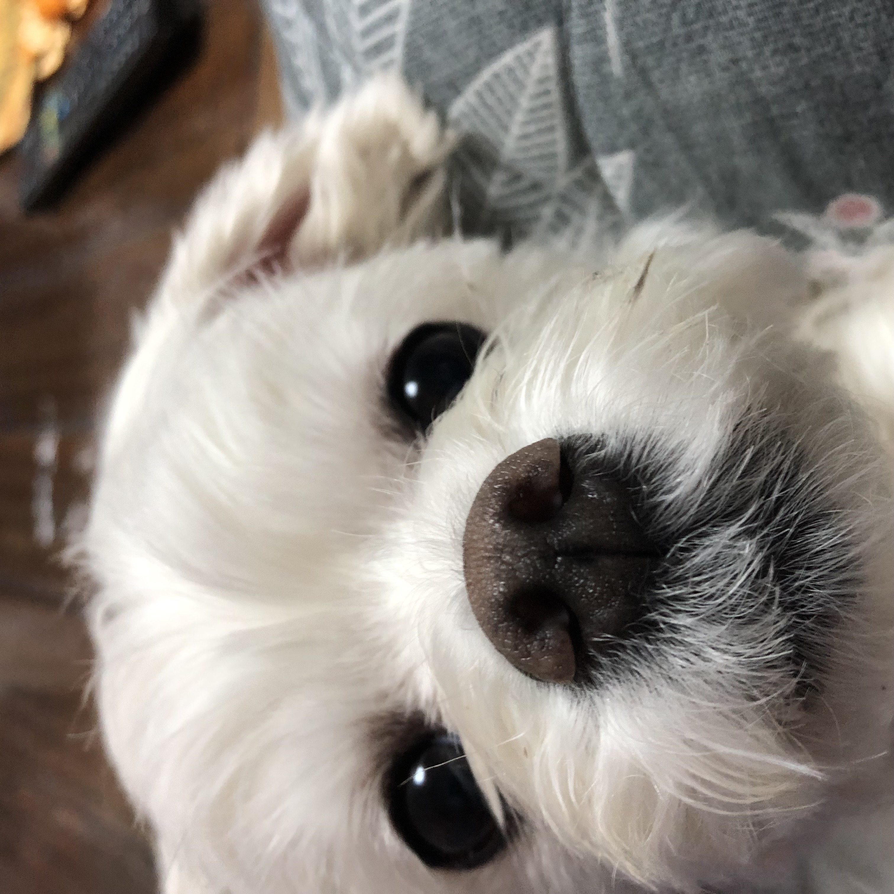
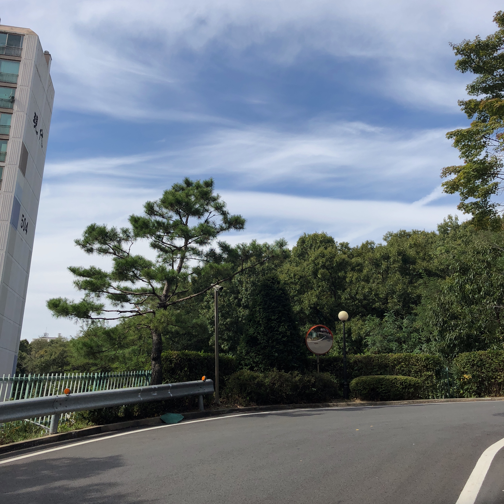

Welcome To My Life
Hello there!
I'm 20 years old and I'm a freshman in college. I live in Icheon.
While attending Sungshin Women's University in Seoul, I tried to stay on my own, but because of the corona I couldn't go to school.
So I only pay rent in my own room. I want to go to school next year and stay on my own.
My goal for next year is to have meaningful days because I have made many new experiences and made many friends that I couldn't have this year.
The picture above was taken when I went to Gapyeong.
There is 'Flower Garden' on Gapyeong Jarasum. I went there in October.
Because it's autumn, there are a lot of flowers.
There were many flowers of various colors, such as fluorescent, red, and yellow.
I was tired because it was exam period, but seeing the flowers, I felt relieved.
I think it felt better because the weather was sunny with pretty flowers.
I really want to go there again when flowers bloom in spring.
In fact, the purpose of this day was to go to 'Edelweiss', a Swiss town in Gapyeong.
But there was so much time left that I looked for another place. This is where it was searched.
I didn't expect much, but it was such a pretty and healing place.
On the contrary, it was better than the place I originally wanted to go. I recommend you to read this article when spring comes.
There were a lot of people coming to see the flowers, but it's a very large place, so you don't have to worry about contacting people.
My Favorite Animal

My favorite animal is a puppy. So I have a Maltese dog at my house.
Her name is Kkot-nim and she is female. I like flowers, so I gave her this name.
This puppy is in charge of the cuteness of our family. When the family comes out of the house, always greet us.
I like dogs the most, but I want to have a cat at least once. I think it is because I like all furry animals.
I think the charm of a cat different from a dog is the charm.
Kkot-nim is my elementary school graduation present.
I've been wanting to raise a dog since I was young, so I made an appointment with my mom.
He said he would buy me a puppy if my grade average was over 90 points steadily until I graduated from elementary school.
Eventually, I kept that promise and got Kkot-nim.
I think it's not only my elementary school graduation gift, but also my whole life gift.
I still have Kkot-nim next to me when I write this.
I'm asking them to stop doing homework and play with me.
However, I should not fall for this temptation. Because the deadline for the assignment is just around the corner.
I need to finish the assignment quickly and have fun. Actually, I think they're asking for snacks rather than playing.
When I wake up in the morning, he always asks me for a snack.
Kkot-nim has a lot of personal talents.
First of all, I'm very good at waking myself up. When my mom says, "Kkot-nim, sabom wake me up,"
I jump onto the bed where I'm sleeping and scratch my head like crazy. Then, I get up in surprise.
Another talent is waiting. If you order me to wait with the snack on my nose, just wait.
Even if I'm doing something else, I never eat until I say, "Kkot-nim, good job."
My Hobby

I like to look at the sky . Looking up at the sky, no matter what the day is, it makes me feel good. So I take many pictures of the sky.
I couldn't travel to Corona, so I didn't see many good scenery. But I'm happy just staying at home thanks to the clear sky.
If Corona is overcome, I would like to travel abroad or Korea a lot and record the sky of the day in pictures.
It is my wish to decorate the sky with my diary every day.
I usually liked the morning sky. Because I like it because the morning sun is bright.
However, after visiting 'Gangcheon Island' in Yeoju, the night sky got better.
Because Yeoju is a rural area, tall buildings and apartments are rare. So it's very dark at night.
When you look up at the sky from that dark place, only the starlight shines on me. These stars were invisible in Seoul or where I live, but there are so many.
Actually, I went camping with my boyfriend on Gangcheon Island, but I fell in love with the stars in the night sky unintentionally.
I really want to go there again next time. It's too bad the scenery isn't even in the picture.
I guess it means come back and look at it with your own eyes. Ha ha.